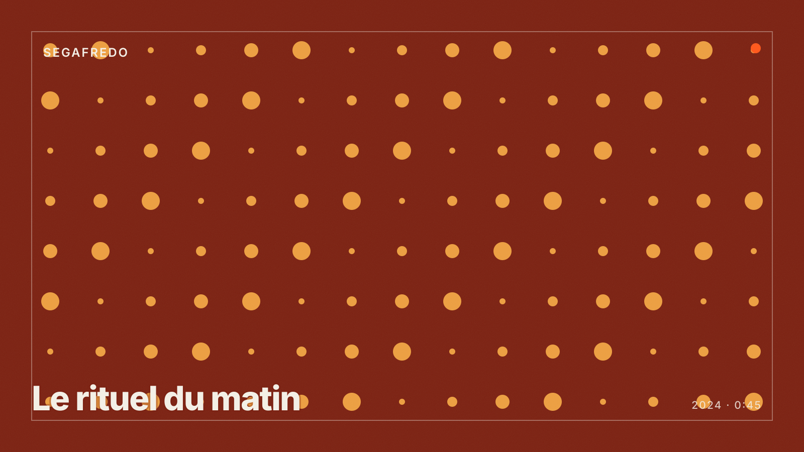

Étude de cas · Brand content & publicité · Food & boissons
Segafredo : le rituel du matin.
Pour Segafredo, Pour Faire Simple. a produit un film de marque de 45 secondes en prises de vues réelles, décliné en 20 secondes pour la télévision et en 6 secondes pour le digital. Tournage sur deux jours en studio à Paris avec une cheffe opératrice spécialisée en food, étalonnage cinéma, mixage 5.1 et stéréo. Production complète en 7 semaines.
La vidéo

Version 45 s · La vidéo se charge à la demande. Vidéo à remplacer
01
L'enjeu.
Installer la marque dans le moment du petit-déjeuner à la maison, face à des concurrents qui communiquent sur l'expresso au bar. Un seul tournage devait alimenter une campagne TV de trois semaines et six mois de présence digitale.
Les contraintes : un produit qui doit être filmé fumant et appétissant (le café refroidit en 90 secondes sous les projecteurs), des mentions légales différentes pour la TV et le digital, et des formats de 45, 20 et 6 secondes qui doivent raconter la même histoire.
02
Le dispositif.
- Écriture : un script en trois temps (le réveil, le geste, la première gorgée), pensé pour être coupé à 20 s et 6 s sans perdre le sens.
- Pré-production : casting de deux comédiens, décor de cuisine construit en studio, styliste culinaire, tests de fumée et de lumière la veille.
- Tournage : 2 jours en studio, équipe de 9 personnes, caméra cinéma et optiques macro, ralenti à 120 images par seconde pour les plans produit.
- Post-production : montage des trois versions, étalonnage cinéma, sound design et mixage 5.1 pour la TV, conformation aux normes de diffusion (PAD).
| Version | Canal | Rôle |
|---|---|---|
| 45 s | Site, YouTube, cinéma | Le film complet, avec la signature de marque |
| 20 s | Télévision, replay | Le spot de campagne, PAD livré aux régies |
| 6 s | YouTube bumper, social | Le rappel : un geste, une tasse, le logo |
03
Les livrables.
versions : 45 s, 20 s et 6 s
fichiers avec déclinaisons 16:9, 9:16 et 1:1
mixages : 5.1 pour la TV, stéréo pour le digital
photos de plateau pour les réseaux et la presse
04
La diffusion.
Campagne TV de trois semaines sur les chaînes nationales en access prime time, relais en replay, puis six mois de diffusion digitale sur YouTube et Instagram. Le film de 45 secondes reste en page d'accueil du site de la marque.
Résultats à documenter : couverture TV, mémorisation post-test, vues et taux de complétion digital. Aucun chiffre de résultat n'est affiché tant qu'il n'est pas validé.
Un film de marque ou une publicité à produire ?
Le brand content et la publicité TV relèvent du parcours agence vidéo. Si vous êtes l'agence de la marque, nous produisons en marque blanche.
Agence vidéo pour les PME
Brand content, publicité TV, films corporate et institutionnels.
Voir le parcours Pour les agencesBoîte de prod en marque blanche
Exécution de votre création publicitaire, du casting au PAD.
Voir le parcours Étude de casTrade Republic — social ads
Motion design pour une fintech.
Lire